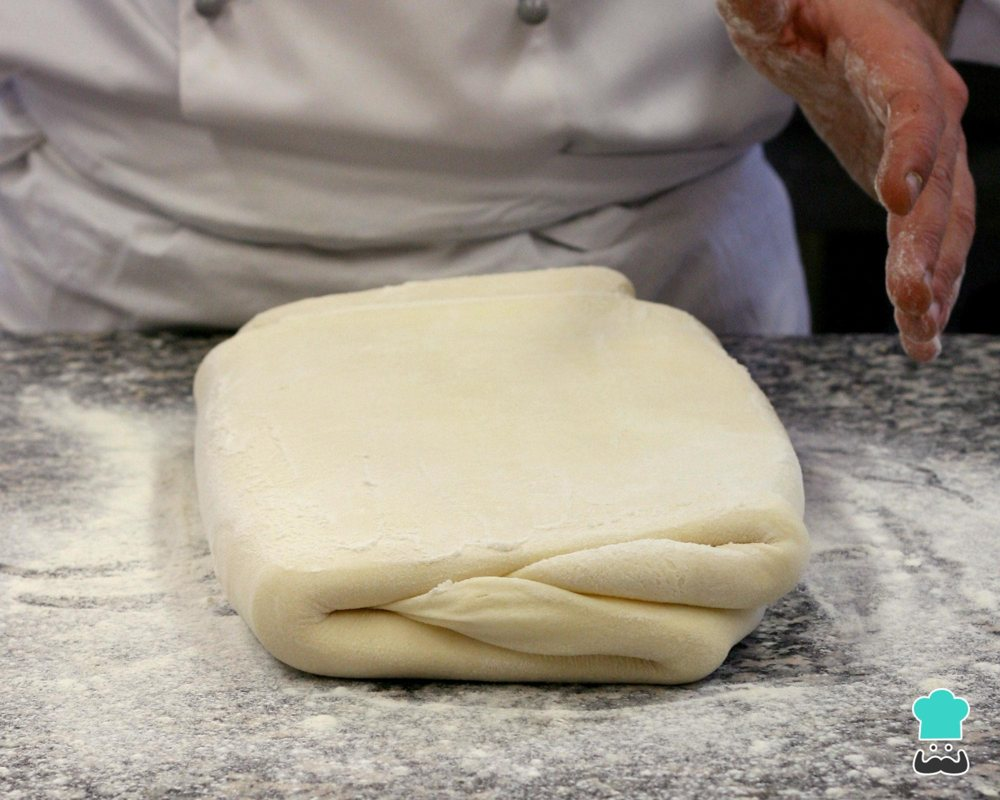

Salgados · Massas fritas/assadas
Massa folhada

Ingredientes
- 1 kg de farinha de trigo
- 1 colher (sopa) de sal dissolvido em 2 xícaras de água
- 1 kg de manteiga amolecida em pedacinhos
Modo de preparo
- Peneire 5 ⅓ xícaras de farinha sobre uma superfície de trabalho, formando um monte. Faça um buraco no centro e coloque aí a água com sal. Amasse e trabalhe rapidamente, formando uma massa lisa não elástica. Reserve.
- Amasse a farinha restante com a manteiga. Embrulhe em papel-alumínio e leve à geladeira por cerca de 30 minutos.
- Usando as mãos, abra a massa feita com farinha e água, formando um quadrado. Deixe a massa mais fina nas laterais.
- Coloque a massa feita com farinha e manteiga no meio do quadrado. Dobre dois lados do quadrado sobre a massa de manteiga. Em seguida, dobre os outros lados, formando um embrulho bem fechado. Leve à geladeira por 20 minutos.
- Retire a massa da geladeira e, partindo do meio, abra a massa com um rolo, para frente e para trás, formando um retângulo de 2 cm de espessura e 30 cm de largura. Dobre a massa em três partes e leve de volta à geladeira por 20 minutos.
- Abra a massa novamente, formando um retângulo, e dobre-a como explicado no passo anterior. Leve novamente à geladeira por 20 minutos.
- Repita a operação por mais 6 vezes e congele.
Observação
Corte sobras de massa folhada formando figuras decorativas e congele para usar depois como guarnição ou para enfeitar tortas. Congelamento: embrulhe o retângulo de massa em filme plástico, ou coloque num saco plástico que feche hermeticamente; etiquete e congele. Descongelamento: em temperatura ambiente por 1 a 2 horas, ou na geladeira de um dia para o outro.